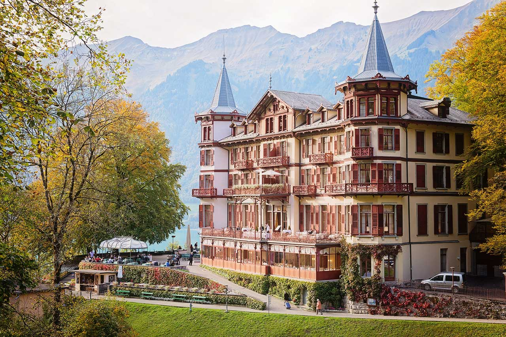
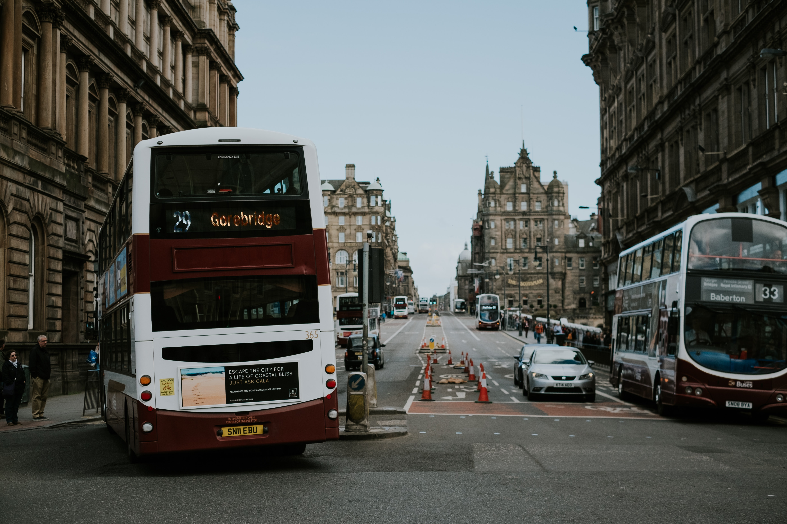

Cities
It doesn’t matter whether you are looking for sun, snow, country air or big city hustle and bustle. Or whether you are travelling on your own, with your partner or family. Thanks to its sheer diversity, Switzerland has just the destination you are looking for.
Their compact size means that Swiss cities embody quality of life and urban flair. You’ll find well-preserved historical centres, modern architectural masterpieces and a vast number of green spaces – all within easy reach.
When the days get longer, there’s a whole lot to experience in Switzerland. That’s because you’ll not only find unrivalled hiking routes, but also UNESCO World Heritage sites and a biosphere reserve, not to mention numerous parks. Our country also offers some places that are just perfect for families.

Bern Ragion
Their compact size means that Swiss cities embody quality of life and urban flair. You’ll find well-preserved historical centres, modern architectural masterpieces and a vast number of green spaces – all within easy reach.
Not many cities have managed to retain their historic features quite as successfully as Bern, the capital of Switzerland. The old town of Bern is a UNESCO World Heritage Site and thanks to its 6 kilometres of arcades - the locals refer to them as 'Lauben' - boasts on of the longest weather-sheltered shopping promenades in Europe.
Why is Lausanne Switzerland’s dance capital? Why is Zurich home to one of the world’s most important poster collections? And why did Picasso give three paintings to Basel as a gift? Switzerland is brimming with cultural surprises.